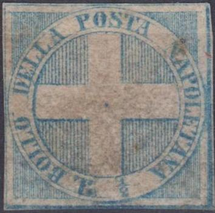
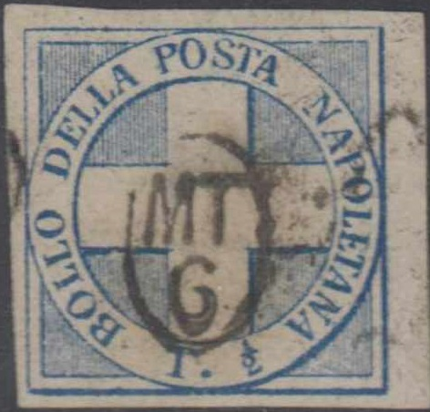
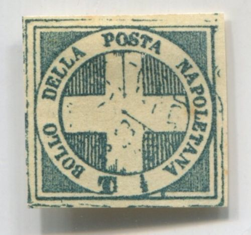
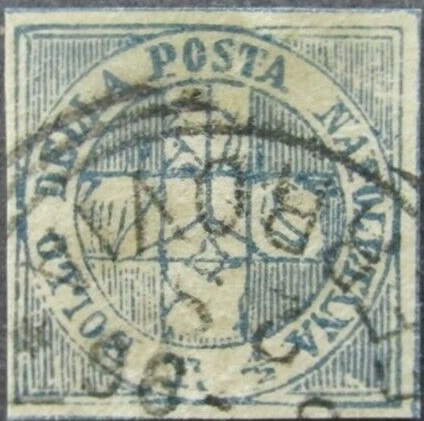
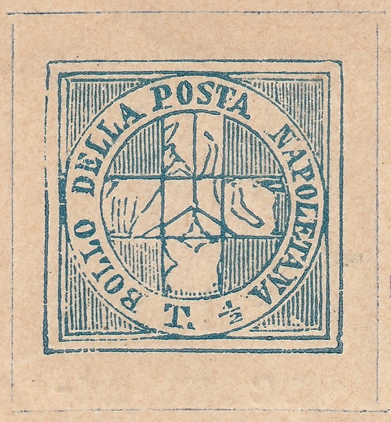
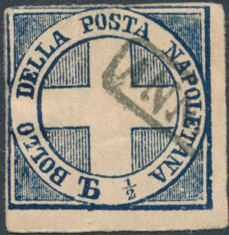
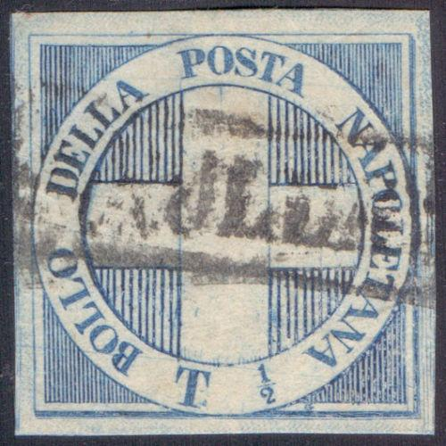
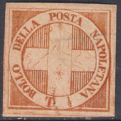
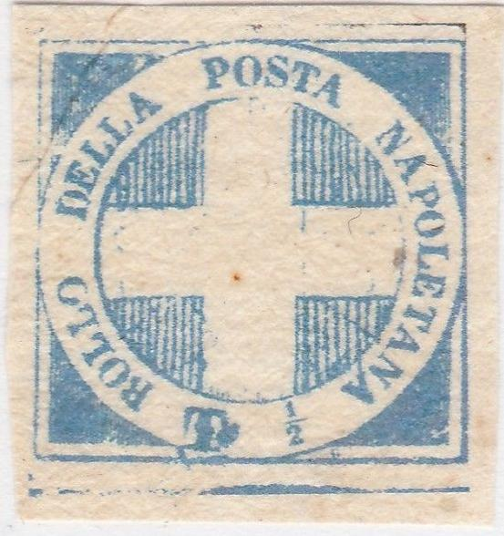

For a similar issue, 1860 Arms, also known as 'Trinacria', click here.
Return To Catalogue - Naples 1860 issue, blue cross, Fournier, Winter and Sperati forgeries - Naples 1860 issue, blue arms 'Trinacria' - Naples 1858 issue - Italy - Neapolitan Provinces
Note: on my website many of the
pictures can not be seen! They are of course present in the
catalogue;
contact me if you want to purchase the catalogue.
For a similar issue, 1860 Arms, also known
as 'Trinacria', click here.


1/2 Tornese blue
Value of the stamps |
|||
vc = very common c = common * = not so common ** = uncommon |
*** = very uncommon R = rare RR = very rare RRR = extremely rare |
||
| Value | Unused | Used | Remarks |
| 1/2 t | RRR | RRR | |
This stamp was made from the 1860 arms issue, by removing the arms and putting a cross in the interior of the circle. However, the previous design can still be seen (since not all parts have been removed carefully). In the above picture, parts of the three-legged figure can still be distinguished. Also the 'G' below the 'T' can still vaguely be observed. The secret mark (just outside the circle to the right of the '1/2' and inside the outer frame line) can clearly be seen in the genuine stamps. Many forgeries do not show these characteristics.
For Naples 1860 issue, blue cross, Fournier, Winter and Sperati forgeries, click here.
The Serrane guide notes a forged red circular cancel "NAPOLI 6 LUG 61", I have not seen this forgery.

(Forgeries)

These forgeries have thin lines connecting the letters in
"DELLA", "POSTA" etc.



Forgeries with a dot behind the bottom "T". This
forgery exits with a variety of cancels for example a
"2925" numeral cancel or a "BORDEAUX (32)"(?)
cancel.

(Very primitive forgeries)
 
Forgeries with a primitive central part. The second one with a
"FERROVA" cancel. This appears to be a cut from an
advertisement card from the stamp dealer Ettore Ragozino. The
cancel is genuine

Another advertisement card from Ettore Ragozino with the two blue
Naples facsimiles send in 1898 (from 'Philatelic trade in
nineteenth century Italy' by Emilio Simonazzi). I would like to
thank Gerhard Lang and Emilio Simonazzi for providing me with a
bigger scan of this card.
Forgery with very large "T", also the same forgery with
a dot cancel.


Other forgeries with a very large "T"; with
"ANNULLATO" and with bar cancels


Very primitive forgery. I have seen an image in Pierre Mahé's
journal Le Timbrophile of 30 November 1868. Next to it the same
image that can be found in the catalogue of Placido
Ramon de Torres "Album Illustrado para Sellos de
Correo" of 1879 on page 84 (information passed to me thanks
to Gerhard Lang, 2016).

Forgery with the lettering too small.

Forgery with "Tb"

Forgery with "TI"


Rather convincing forgeries, but no traces of the "G"
and the "S" of "POSTA" is different at the
top. These forgeries were made by Panelli, they are engraved.

Very similar to the above forgery, but not engraved.
I think the next stamp is a forgery too (next to it a stamp in the wrong colour, apparently from the same maker):


A Senf forgery with red overprint
"FALSCH!"


Other modern forgery, note the blur corners.
The above forgery seems to be a relatively modern product. It is often offered from Italy on Ebay (2005). Note the relatively crude execution, the breaks and flaws seem to be constant for each individual forgery. Click here for more information on these modern Italian States forgeries

Other modern forgery, note the dot connecting the bottom
"T" to the bottom outer frameline.


Very dubious items, could the first one be a Fournier forgery and
the second one a modern reproduction?
Other forgeries exist, among them one with inscription "NAPOLITANA" ("I" instead of "E").
{kind=link}
{kind=link}
{kind=link}
{kind=link}
{kind=link}
{kind=link}
{kind=link}
{kind=link}